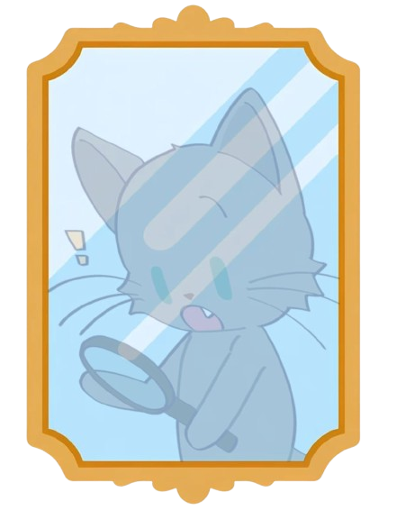

mirror of mindfulness
MIRROR OF MINDFULNESS
Temukan refleksi & arketipe hubunganmu!
Ada pertanyaan? email kami di: mirrorofmindfulness@gmail.com
Skor Idola
Pertanyaan 1 dari 10
Loading question...
KUIS SELESAI!
Arketipe Refleksimu
Berikut adalah hasil analisis berdasarkan nilai rata-rata kuismu.
TOURIST
Skor Idola: 0.0
Skor Fandom: 0.0
Description goes here...